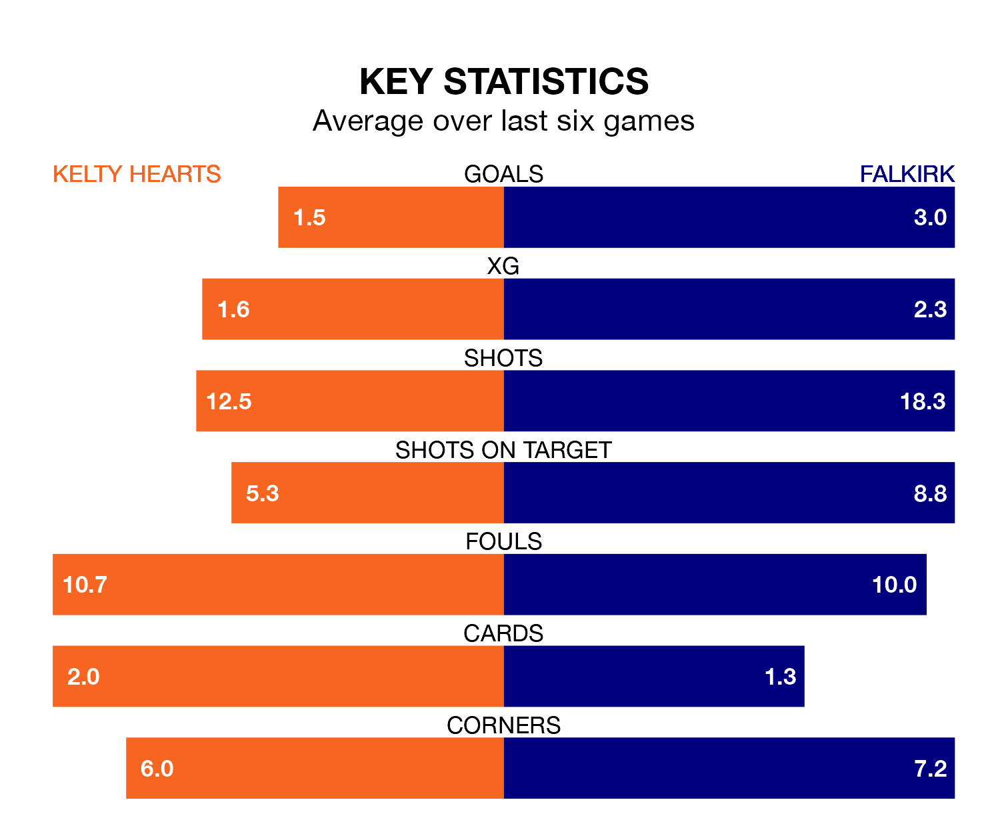

Falkirk are strong favourites to take all three points despite Kelty Hearts's home advantage in Saturday's match at New Central Park.
*Betting Company* are offering odds of 1.4 on Falkirk sealing the win, with the visitors sitting first in League One table.
Kelty Hearts, who are sixth in the league and 31 points behind the Bairns, are priced at 6.71 to win. A draw is set at 4.65.
With 62 goals in 24 games so far this season, Falkirk are the league's highest scorers with 2.6 goals per game. And they are conceding fewer than average, letting in 15 goals at a rate of 0.6 per game.
Kelty Hearts, meanwhile, are below average scorers, with 1.5 goals per game, compared to a league average of 1.6. They have conceded 1.6 goals per game.
With Sam Long between the sticks, the Bairns can rely on one of the league's safest pair of hands. He has kept eight clean sheets in his 13 appearances this season, and no 'keeper has prevented the opposition scoring more often in League One.
In the hosts' net, Kyle Gourlay has four clean sheets in 24 games. He has conceded a goal every 62 minutes, more than twice as often as the 146 minutes between goals for Long.
Kelty Hearts are in mixed form in League One, with two wins and two draws from their last six games.
With five wins and a draw over that period, the away team's form is much better – they have taken 16 points from 18, compared to Kelty Hearts's eight.
In the last 10 years, Kelty Hearts and Falkirk have played each other on six occasions. Kelty Hearts won two of them, Falkirk three, and they drew once.
On average, Kelty Hearts scored 1.3 goals and the Bairns 1.8 in those matches.
Their last meeting was on December 9, when Falkirk won 2-1 at home.
Kelty Hearts's last match was on February 17, a 4-2 loss against Montrose, with Craig Johnston getting the goals for Kelty Hearts.
Falkirk beat Montrose 3-0 last time out, on Tuesday, with Aidan Nesbitt, Gary Oliver and Matheus Machado (own goal) on the scoresheet.
Saturday's match will be refereed by Peter Stuart, who has taken charge of nine League One games so far this season, issuing one red card and booking 34 players. He has not awarded any penalties.
The last Falkirk game Stuart refereed was the 5-0 win away at Alloa Athletic on January 27. He is yet to oversee a match featuring Kelty Hearts this season.
Updated: 10:08 (UTC), 23/02/24